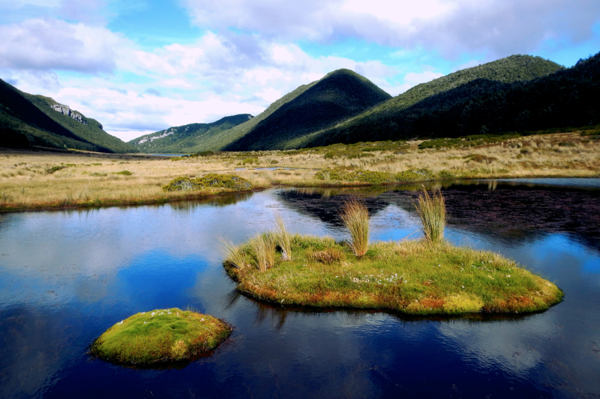
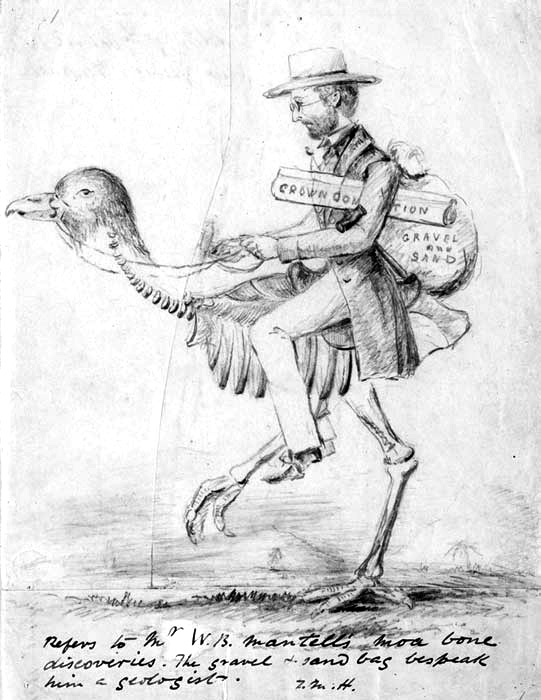

Rediscovered by a Persevering Doctor, the Flightless, Colorful Takahe, or 'Wanderer', Struggles to Survive
By R.V. Francis Smith
Dr Geoffrey Orbell and Dr Robert Falla in Notornis Valley, Fiordland
In New Zealand's rugged Fiordland a bird thought extinct for fifty years is struggling for
survival. Behind the rare species in its fight for life is all the protective power of the
Dominion Government.
Rediscovery of this flightless bird, the large, brilliant-hued native rail which the Maoris
called takahea, meaning "wandering at large," excited almost as much interest in New Zealand
as discovery of a living passenger pigeon would arouse in America.
To zoologists and bird lovers throughout the world, reappearance of takahea, now called
the takahe, was a notable event. They had a scientific name for the creature – Notornis
hochstetteri, the first half of which means "bird of the south" – but they knew
tantalizingly little about it and had considered it lost in the limbo of vanished species.
To the rediscoverer, Dr. G. B. Orbell, a physician of Invercargill, New Zealand,
the dramatic sight of a takahe alive came as the reward of years of patient and
systematic search. Only four of the birds were known to science when he made
his discovery on the shore of a lake in what is now called Notornis Valley.
Since August, 1898, there had been no authentic report of one being caught, or even seen.

Notornis Valley, Lake Orbell
Futile Wings Have Three-Foot Span
A primitive type of large moor hen found only in New Zealand, the takahe is unlike any
other member of the world-wide rail family to which it belongs. For example, despite its
membership in an aquatic family, it avoids swamps and rivers. It does, however, share some
of the clan 's characteristics, such as a large frontal shield.
The full-grown takahe stands some twenty inches high and weighs about six pounds.
The wings, though incapable of flight, may have a three-foot span.
The adult bird is vividly colored. Head, neck, breast, and flanks are an iridescent
indigo blue, becoming brighter on the shoulders and changing to a malachite green on
the mantle.The dark rump and upper tail coverts are olive green, the abdomen
and thighs purplish black, and the under tail coverts white. The powerful beak is scarlet
at the base, fading outwards to a wax pink. Legs and feet are red, eyes reddish brown.
This brilliant color scheme is seen to full advantage only when the bird is approaching
the observer or passing at right angles to him.
In contrast to its showy parents, the young takahe wears only a uniform, soft black down.
The black beak is white-tipped, and the disproportionately large legs are a pale purple.
In New Zealand's ornithological history, extinction, or near extinction,
has been the lot of many species as a result of settlement.
“
It originally occurred throughout forest and grass ecosystems. Today it is restricted to
alpine tussock grasslands on the mainland and feeds primarily on juices from the bases of
snow tussock and a species of fern rhizome. It eats introduced grasses on the islands.
It usually lays two eggs and chicks can begin breeding at the end of their first year,
but usually start in their second. It is long-lived, probably 14-20 years.
”
— Heather and Robinson
Originally, native birds had no enemies, and the vegetation which affords them cover
was not subject to browsing by animals. Under these favourable conditions many
unusual forms of life, including birds of little or no power of flight, were able to
survive and thrive.
Island
Size (ha)
Habitat
Number of Takahe Pairs
Kapiti
2023
Mostly Forest
<10
Mana
217
Mostly Grassland
>10
Maud
309
Mixed forest/grass
7-10
Tiritiri
210
Mixed forest/grass
10
Estimated carrying capacity of islands with Takahe.
Vanished Birds Include 12-Foot Moa
Before the arrival of Capt. James Cook in 1769, birds were the dominant
land vertebrates. The only land mammals were the dog, a Polynesian rat, and two species
of bats. The dog and rat had been introduced by the Maoris on their second migration,
about A. D. 1150. [1]
After the Maoris had caused the extinction of the huge flightless moa, one species of which
was twelve feet high, European settlement brought about more extensive changes. Ferrets,
stoats, and weasels were introduced to control a plague of rabbits, and these, with cats,
dogs, and other predators, virtually sealed the fate of numerous native species, among them
the takahe.
The first living takahe known to Europeans was purposely killed and eaten. It was caught by
a sealing gang on Resolution Island, near the southwest end of South Island , in 1849.
Two years later a party of Maoris caught a second bird in Thompson Sound, about forty miles
farther north.
Luckily, the skins of both birds were obtained by Mr. W. D. B. Mantell, who in 1847 had
discovered the semi fossil remains of the North Island variety (duly named Notornis mantelli
by Sir Richard Owen, of London). The skins were sent to the British Museum.

Walter Mantell riding on the back of a Moa
Twenty-eight years passed before another specimen appeared. A rabbiter's dog caught it near
the south end of Lake Te Anau. The bird was destined for the cooking pot when it was
rescued by a farm manager and eventually sold to a museum in Dresden, Germany, for £105.
After close examination, Dr. Adolph B. Meyer of the Dresden museum found that this bird
was sufficiently different from the North Island semi fossil form found by Mantell to warrant a
distinct name. Accordingly, the name Notornis hochstetteri was given the present species.
The fourth specimen was caught by a dog on the shore of Middle Fiord of Lake Te Anau in 1898.
The bird was bought by the Government for £250 to ensure that it remained in New Zealand.
Preserved in the Otago Museum at Dunedin, it still is the only mounted specimen in the country,
for no more takahe were known until Dr. Orbell's discovery.
Notornis Valley, in South Island's Murchison Mountains, lies only six miles from a main road;
yet it hid the takahe from human sight for decades. From boyhood Dr. G. B. Orbell,
an Invercargill physician, reiused to believe the creature lost. After thirty years his
quest succeeded; Dr. Orbell tracked the takahe to the scene of its last stand in one of
the wildest parts of the Dominion.
Lake Orbell, New Zealand
A Thirty-Year Quest Begins
Dr. Orbell's interest in the creature began more than thirty years ago
when, as a boy, he found an old photograph showing the museum bird in a case.
His mother told its story and explained that the bird was supposed to be extinct.
That word "supposed" stimulated Dr. Orbell's adventurous spirit, and he learned all he
could about the species. From game rangers and from men who had probed the fastnesses of
Fiordland, from hearsay and from stories told around campfires on numerous hunting trips,
Dr. Orbell picked up fragments of information about possible takahe hiding places.
In 1945 Dr. Orbell built a summer home at Lake Te Anau, where two of the birds had been
caught. The question of the takahe's existence and whereabouts was always with him, but he seldom mentioned
the matter except jokingly or as a bait to catch information. In this way he learned that a man who knew the
country round about always carried his rifle loaded when in a certain area.
“It might be worth £400 to £500,” the man said with a knowing air.
A 1950 expedition into Notornis Valley
Severe Winters Limit Food
From observations over three nesting seasons, it seems that most, if not all,
of the birds in the main Notornis Valley breed yearly, but very few chicks are hatched and
raised. In the 1949-50 season, 40 percent of the observed eggs were totally infertile, only
three chicks were hatched, and by February, 1950, only one remained alive. It is now known,
however, that several birds besides those under observation were nesting.
The availability of snow grass and other food during severe winters, when the area
is deeply covered with snow, is an important factor in the survival of the species.
A dead adult bird, untouched by predators, was found in the main valley in the spring
of 1949.
This and other complete skeletons have suggested that starvation is a not uncommon
cause of death.
Every endeavour is being made to preserve these contemporaries of New Zealand's
extinct giant moa, swan, and eagle, interesting creatures sorely missed. But if measures to
combat predators prove ineffective, if nesting shelter and food suffer serious depletion, if
a severe winter strikes, or if infertility increases-if anyone or a combination of these
mishaps overtakes back-to-the-wall notornis -then the species must inevitably join the heath
hen, the dodo, the great auk, and others that are lost to the world forever.
TAKAHE Valley from neighbouring ridge, frozen lake in foreground.
New Zealand
New Zealand is a fertile and mountainous group of islands in the southwestern Pacific Ocean.
"It is a land uplifted high," wrote Abel Tasman, a Dutch navigator who was the first European
to sight New Zealand, in 1642. Snowy peaks, fjord-scarred shores, and pastures dotted with sheep
define this country.
New Zealand, a parliamentary democracy modelled on that of the United Kingdom,
has been a self-governing British dominion since 1907. It became a founding member of the
British Commonwealth in 1926.
One in three citizens — Kiwis — lives in or around the city of Auckland. Rugby clubs with
names such as Canterbury and Wellington reveal a nation peopled mostly by descendants of
British settlers. The indigenous Maori constitute about 15 percent of New Zealanders;
recent immigrants—primarily from Samoa and Fiji—make Auckland one of the world's largest
Polynesian cities.
The export-driven country, whose chief trading partner used to be the United Kingdom,
faltered in 1973 when Britain joined the European Union. The loss of preferential treatment
prompted a search for new markets. Japan, Australia, and the U.S. now buy half of all exports,
which include wool, mutton, lamb, beef, cheese, fish, and chemicals.
New Zealand plays an active role in helping democratic nations and emerging Pacific island
economies. It sent troops to East Timor when violence broke out in 1999, and it provided
millions of dollars to the South Pacific island of Niue after it was devastated by a tropical
cyclone in 2004. Niue and the Cook Islands enjoy a status of self-government in free association
with New Zealand.
Fast Facts:
1
New Zealand has a population of just over 4 million.
2
The Capital city is Wellington in the North, with a population of 343,000.
3
The language is predominately English, with Maoiri also spoken.
4
The total size is 270,534 Square Kilometers - (104,454 Square Miles)
5
Religions practiced are mainly Protestantism and Catholicism.
6
The currency is New Zealand Dollar (NZD).
7
The average life expectancy is 78.
8
The GDP per Capita is $20,100.
9
99% of the country is literate.
[1] See, in the National Geographic Magazine: "The Columbus of the Pacific: Captain James Cook," by J. R. Hildebrand, January, 1927; and "Tuatara: 'Living Fossils' Walk on Well-Nigh Inaccessible Rocky Islands off the Coast of New Zealand," by Frieda Cobb Blanchard, May, 1935.↩︎
Copyright 1952. R. V. Francis Smith
Published by the National Geographic Society, Washington, D.C.
Article: Copyright, 1952, by National Geographic Society, Washington, D.C. International copyright secured. All rights reserved. Printed in U.S.A. Entered at the Post Office at Washington, D.C., as Second Class Mail Matter. Acceptance for mailing at special rate of postage provided for in Sec. 1103, Act of October 3, 1917, authorized July 1, 1918. Cover design and names registered in United States Patent Office.
New Zealand Facts: Copyright, 1995-2015, by National Geographic Society, Washington, D.C.